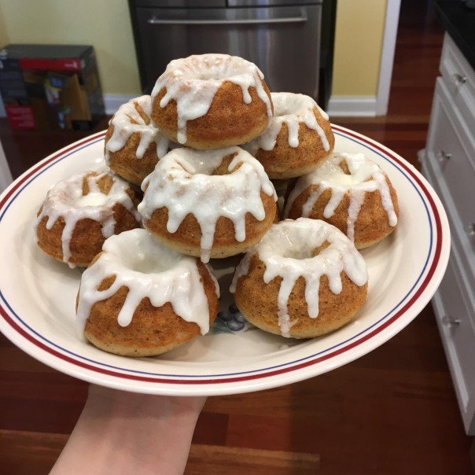

Sweetroll

Description
Don't let anyone steal your sweetrolls ever again. Instead of guarding your hard-won baked goods against bandits
and that pesky Thieves Guild, now you can bake them in the quiet safety of your own home with no one the wiser.
Ingredients
Rolls
- 3 tablespoons of unsalted butter, melted
- 1 cup of warm whole milk
- 2 tablespoons of honey
- Pinch of salt
- 1 egg
- 2 teaspoons of active dry yeast
- 2 cups of all-purpose flour
Frosting
- 2 tablespoons of cream cheese, softened
- 1 tablespoon of unsalted butter, softened
- 1⁄2 cup of powdered sugar
- 2 tablespoons of heavy cream
Steps
Rolls
- Preheat the oven to 350 oF.
- In a large bowl, comnine the butter, warm milk, and honey, stirring until the honey has dissolved.
- Add the salt and yeast, followed by the egg and flour, and mix completely until you have a smooth batter.
- Spoon evenly into four 5-inch miniature Bundt pans. Allow to rise for just 30 minutes.
- Then bake for 15 minutes, until a toothpick inserted in the rolls comes out clean.
Frosting
- Cream together the cream cheese, butter, and powdered sugar in a small bowl.
- Gradually add just enough heavy cream to get a smooth, thick icing that barely runs off a spoon.
- When the rolls are finished baking, allow to cool for 5 minutes in the pan, then tip out onto a colling rack.
- When completely cooled, spoon the icing over the tops of the rolls, letting it run down the sides a little.